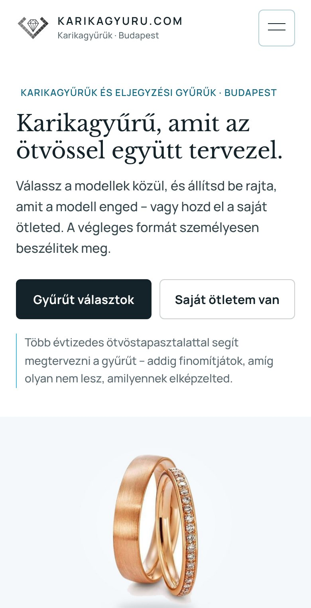
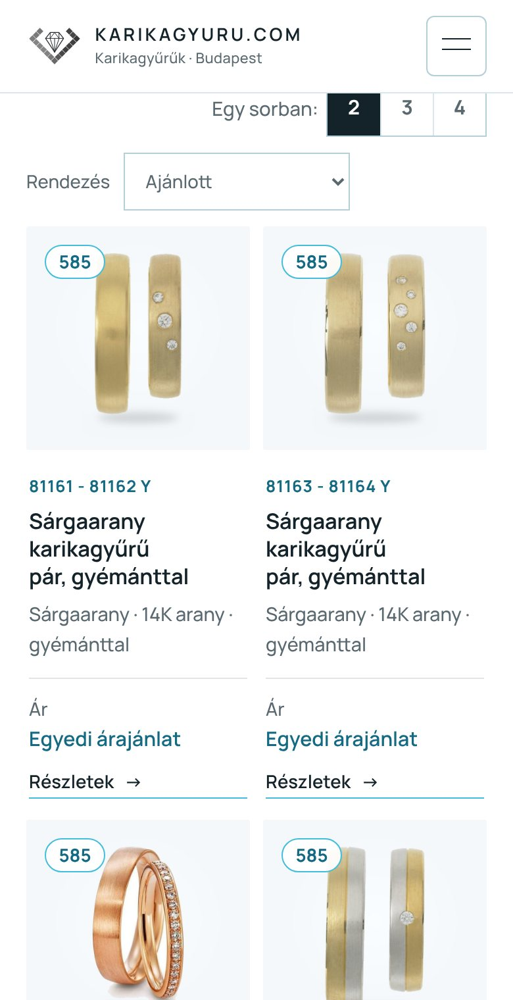
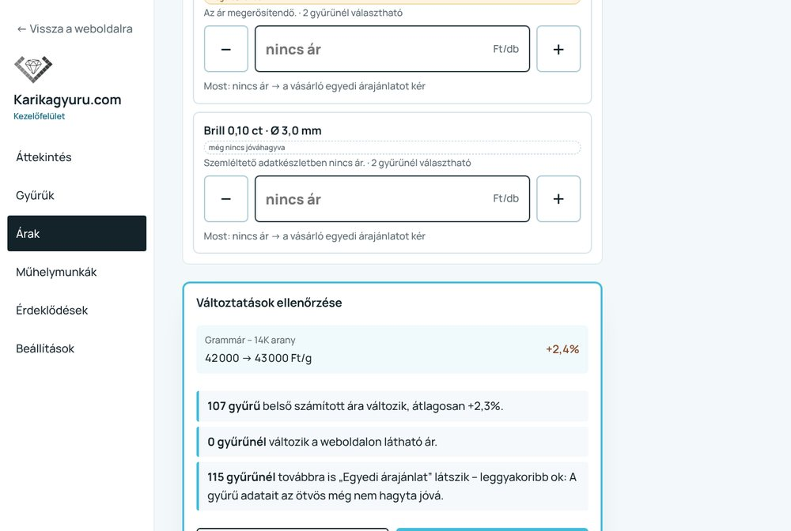
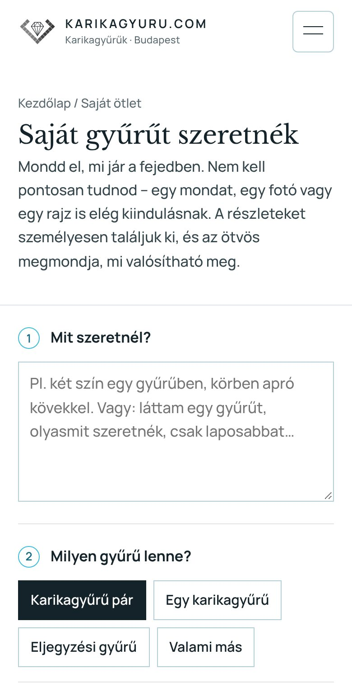
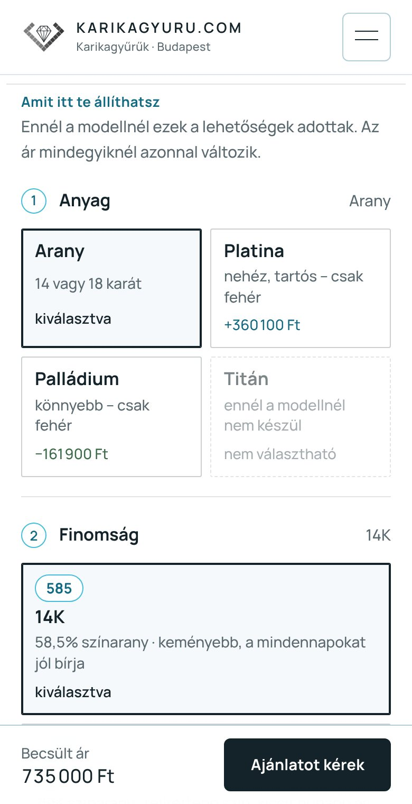
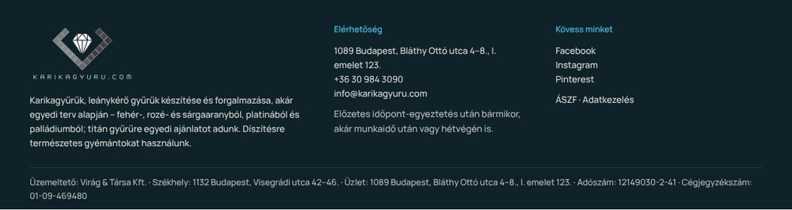
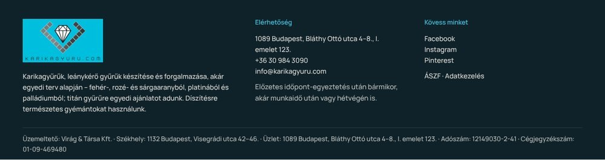

1Az új weboldal fő előnyei
- Telefonon is kényelmes. Az új oldal telefonra is készült: nagy gombok, jól olvasható betűk.
- A vásárló maga állítja be a gyűrűt: anyagot, méretet, köveket – csak azt, amit Ön az adott modellnél megenged.
- Az árakat Ön irányítja. Egy szám átírásával minden gyűrű ára frissül. Amíg Ön nem hagy jóvá egy árat, a vásárló nem lát árat, csak „Egyedi árajánlat”-ot.
- Minden kérés egy helyen. Ajánlatkérés, időpontkérés, saját ötlet fotóval – mind a kezelőfelületen gyűlik.
- Személyes marad. Az oldal célja, hogy a pár bejöjjön Önhöz. Online rendelés és fizetés nincs benne.

2A 115 gyűrűs katalógus
A mostani weboldal mind a 115 gyűrűje bekerült, a régi cikkszámokkal. A vásárló kereshet cikkszámra, szűrhet szín, kő és fazon szerint. Telefonon egyszerre két gyűrű látszik egymás mellett.
Minden gyűrűnek saját oldala van, nagyítható fotóval.
A fotókról: 30 gyűrűnek már saját, a weboldalhoz optimalizált fotója van. A másik 85 fotó egyelőre a mostani weboldalról töltődik be. Ha megkaphatnánk a fotók eredeti, nagy felbontású fájljait, mindegyik szebb és gyorsabb lenne.

3Az árak egy helyen
Az árakat az Ön módszerével számolja: a gyűrű súlya × a gramm ára, plusz a kövek. Önnek csak a gramm árát kell átírnia, ha változik az arany ára.
- Mentés előtt megmutatja, mi változik: melyik ár, mennyiről mennyire, és hány gyűrűnél változik a weboldalon látható ár.
- Minden változás megmarad. Ha tévedett, a „Korábbi árak” résznél visszaállítja az előzőt – előtte megmutatjuk, mi változik.
- Gyűrűnként Ön hagyja jóvá, hogy az adott modell adatai rendben vannak. Amíg ez nincs meg, ott a vásárló „Egyedi árajánlat”-ot lát.

4Egyedi tervezés
Akinek saját elképzelése van, a „Saját ötlet” oldalon leírhatja. Kiválaszthatja, milyen gyűrű lenne, miből, legyen-e benne gyémánt, és legfeljebb három fotót vagy rajzot is csatolhat.
Itt az oldal szándékosan nem mond árat. Az egyedi gyűrű árát Ön mondja meg, amikor már tudja, mi készül.
A gyűrűoldalakon a vásárló a modell keretein belül állíthat (anyag, méret, kövek). Amit a modell nem enged, azt nem lehet kiválasztani. Arra időpontot kérhet.

A gyűrű beállításánál minden választásnál látszik, mennyivel változik az ár. Ez csak az Ön által jóváhagyott gyűrűknél és áraknál működik.

5Az érdeklődések
- Minden kérés a kezelőfelület „Érdeklődések” oldalára érkezik: név, telefonszám, üzenet. Ha egy gyűrűről kérdeznek, a kiválasztott beállításokkal együtt.
- A csatolt fotókat csak Ön látja, nyilvánosan nem jelennek meg.
- E-mail-értesítés: elkészült, de ki van kapcsolva. Akkor kapcsoljuk be, amikor Ön megmondja, melyik címre kéri, és együtt kipróbáltuk.
Fontos: a mostani nyilvános bemutató oldalon az elküldött üzenet nem jut el Önhöz. Az oldal ezt a vásárlónak is kiírja, és megadja a telefonszámot. Az üzenetek csak az élesítés után érkeznek meg valóban.
6A két arculati változat
Az Ön által küldött két logóból tisztább, élesebb rajzot készítettünk. Két változatot javasolunk. A felépítés és a működés ugyanaz, csak a színek mások.


Ez javaslat. A logó csak az Ön jóváhagyásával lesz végleges.
7Amiben az Ön döntése kell
Ezekről semmit nem döntöttünk el Ön helyett. Nem kell a kezelőfelületen kitöltenie őket: mi kérdezzük meg Öntől, és a válaszát mi visszük át, ellenőrizve. Addig, ahol valami nincs eldöntve, a vásárló „Egyedi árajánlat”-ot lát.
Megjelenés
- „A” vagy „B” logóváltozat
- legyen-e szlogen
- tegezzük vagy magázzuk a vásárlót
Szakmai adatok
- 14K és 18K arany gramm ára
- platina, palládium – ára, kínálja-e mindenhol
- titán, acél – kínálja-e
- gyémántméretek és árak
- gravírozás, kőfoglalás díja
- méretek, szélességek határai
Rendelés
- előleg
- fizetési módok
- elkészülési idő
- lemondás
- jótállás
Technika
- tárhely, domain
- melyik e-mail-címre jöjjenek a kérések
- adatkezelési tájékoztató, ÁSZF
- a fotók eredeti fájljai
8Később: 3D-s gyűrűtervező (külön, második szakasz)
Később a vásárló a gyűrűt térben, forgatva is megnézhetné, az Ön Rhino-terveiből készítve. Ez nem része a mostani első szakasznak. Külön megbeszéljük, és külön ár.
- Hozzá az eredeti Rhino-fájlok kellenek, modellenként.
- A számítógép által készített fájl csak kiindulás lehet: gyártás előtt mindig Önnek kell ellenőriznie.
- A mostani rendszer erre előkészítve készült, de valódi modellekkel még nem próbáltuk ki.